Cuidar do sorriso pode ser leve. E começa com uma conversa.
Na Sorria Guanabara, nossa equipe de dentistas explica cada etapa do seu tratamento, do diagnóstico ao resultado, com técnica atualizada e atendimento para toda a família.
- Atendimento para crianças, adultos e idosos
- Plano de tratamento explicado antes de começar
- [Condições de pagamento facilitadas]
Prazer, nós somos a Sorria Guanabara.
Montamos a clínica com uma ideia simples: ninguém deveria ter medo ou vergonha de cuidar dos dentes.
Aqui, antes de qualquer procedimento, a dentista senta com você, mostra o que está acontecendo e explica as opções com calma. Você entende o porquê de cada etapa e decide junto com a gente.
Nossa equipe investe em atualização constante, porque tratamento bem planejado é tratamento que dura. E fazemos questão de que cada paciente se sinta em casa, da primeira consulta à última revisão.
Faz tempo que você adia o dentista?
Talvez seja aquela dor que vai e volta. O medo de ouvir que precisa de um tratamento caro. Ou a vergonha de sorrir em foto.
A gente entende. E é por isso que o primeiro passo aqui é só uma conversa: sem pressa, sem julgamento e sem surpresa no meio do caminho.
Não importa há quanto tempo você não vai ao dentista. Importa o que fazemos daqui pra frente.
Você recebe o plano de tratamento explicado e sabe o que vai acontecer em cada sessão.
Seu tempo é respeitado, na cadeira e na decisão.
Tudo o que o seu sorriso precisa, em um só lugar.
Da prevenção à reabilitação, cada tratamento começa com diagnóstico e planejamento.
- 01Clínica geral e prevenção
Limpeza, restaurações e check-up para manter a saúde em dia e evitar problemas maiores.
- 02Clareamento dental
Dentes mais claros com acompanhamento profissional e segurança para o esmalte.
- 03Lentes e facetas
Formato, cor e alinhamento planejados para combinar com o seu rosto.
- 04Ortodontia
Aparelho para alinhar os dentes e melhorar a mordida, em qualquer idade.
- 05Implantes e próteses
Devolvem a função de mastigar e a segurança de sorrir sem esconder os dentes.
- 06Odontopediatria
Primeiras consultas leves e divertidas, para a criança crescer gostando de dentista.
- 07Tratamento de canal
Alívio da dor e preservação do dente natural sempre que possível.
Resultados de quem confiou o sorriso a nós.
Casos reais de pacientes da Sorria Guanabara, publicados com autorização.
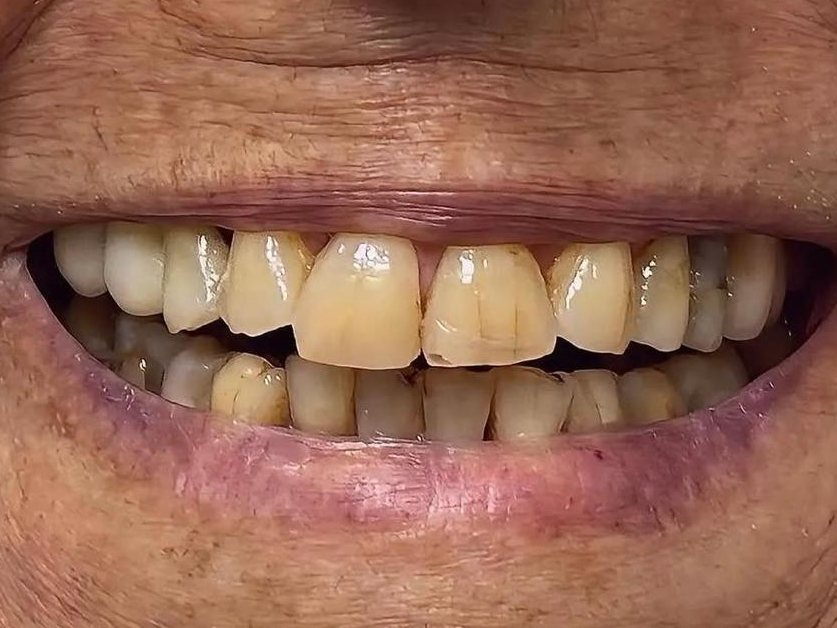
Antes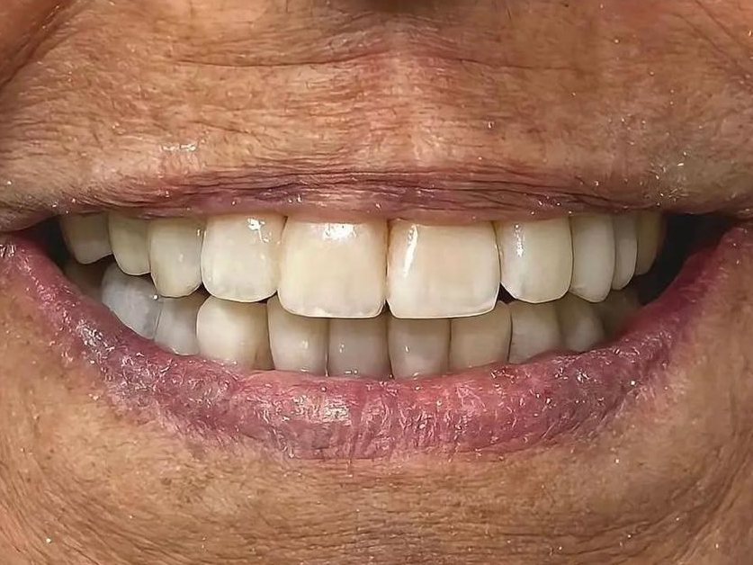
Depois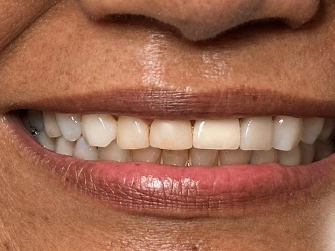
Antes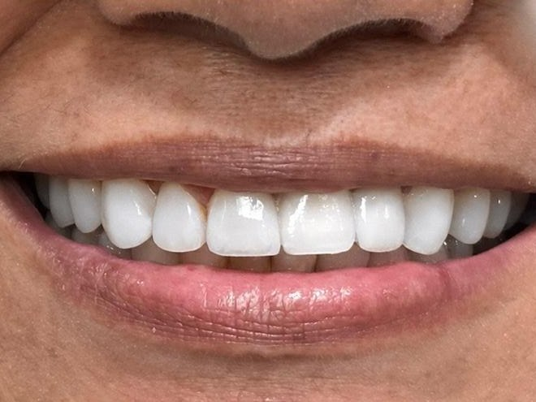
Depois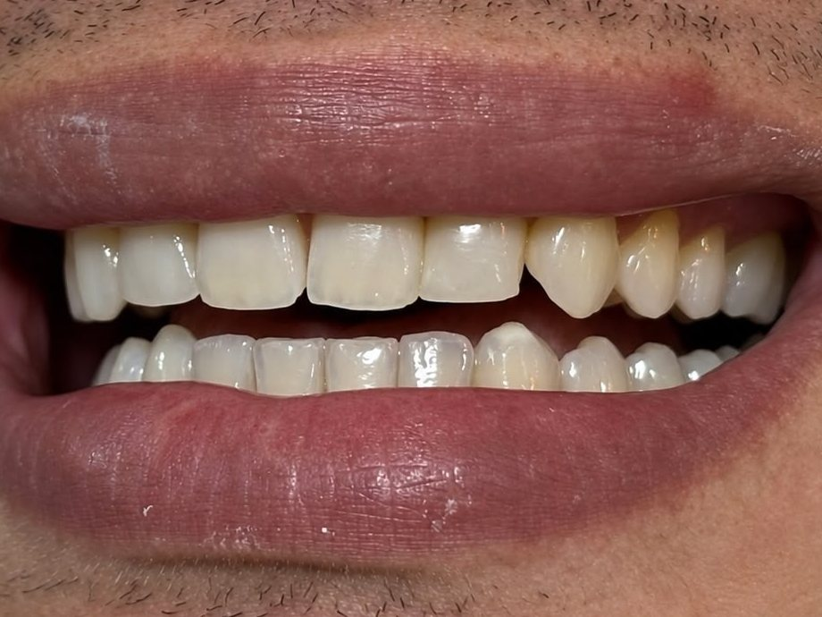
Antes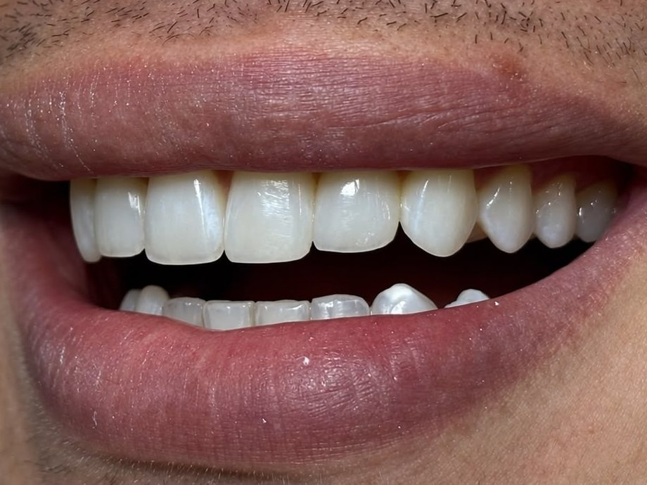
Depois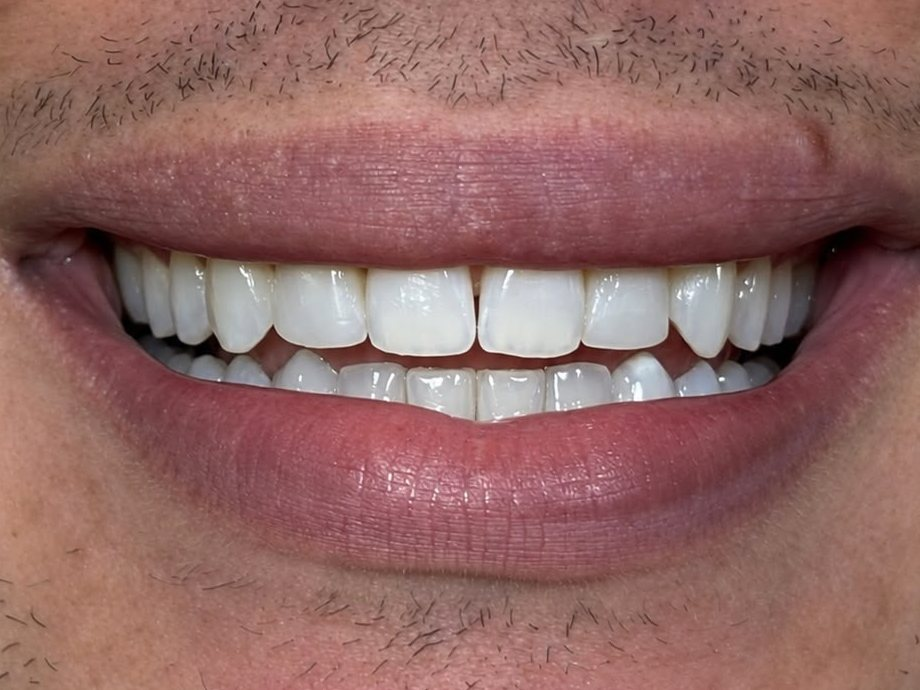
Antes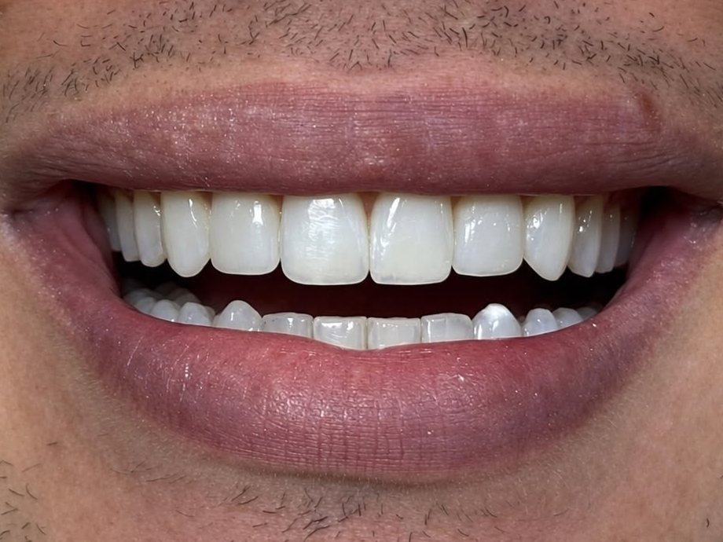
Depois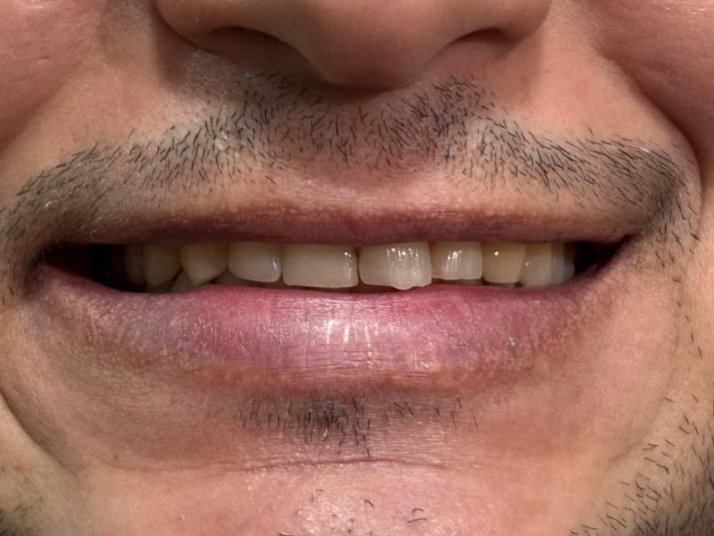
Antes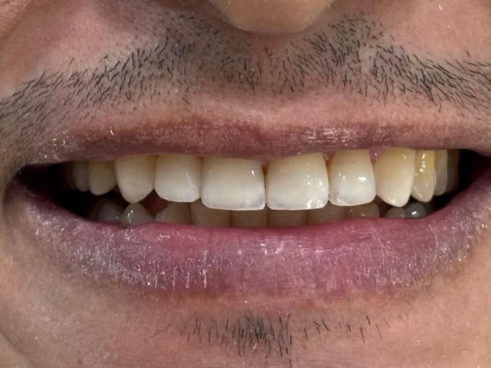
Depois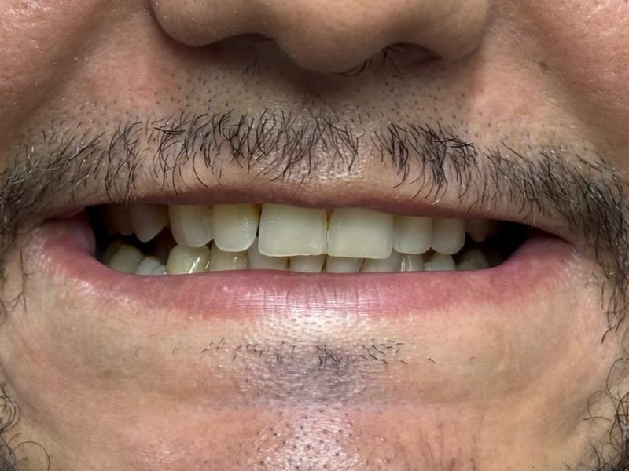
Antes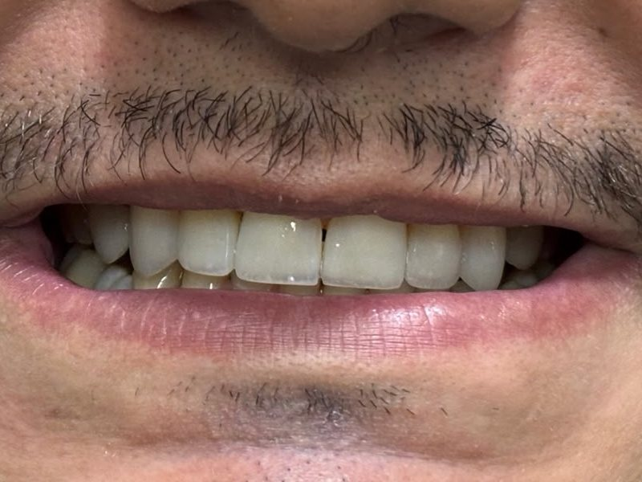
Depois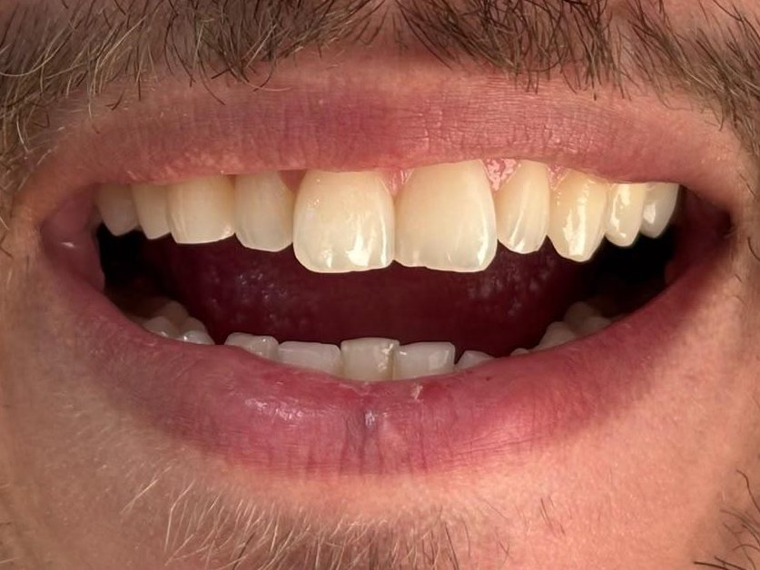
Antes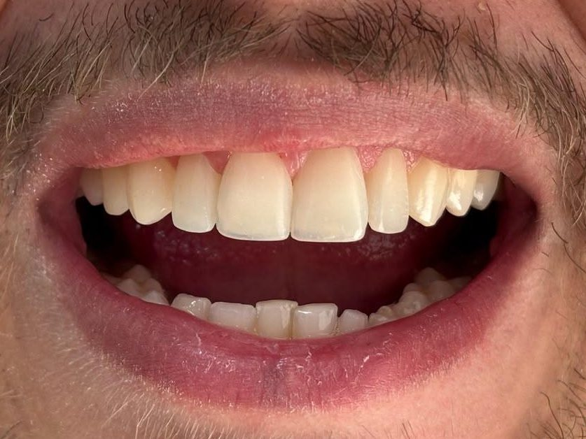
DepoisImagens publicadas com autorização dos pacientes. Os resultados variam de pessoa para pessoa e dependem de avaliação clínica individual.
Agendar minha avaliaçãoSeu primeiro passo é simples.
- 1Chame no WhatsApp.
Clique no botão e fale com a nossa equipe. Escolhemos juntos o melhor dia e horário.
- 2Venha para a avaliação.
Nossa dentista examina, escuta o que te incomoda e tira todas as suas dúvidas.
- 3Receba seu plano de tratamento.
Você sai sabendo o que precisa ser feito, em quantas etapas e quais as condições. A decisão é sua, no seu tempo.
O que nossos pacientes contam.
“[Depoimento real do paciente, de preferência falando de atendimento, explicação e acolhimento]”
“[Depoimento real do paciente, de preferência falando de atendimento, explicação e acolhimento]”
“[Depoimento real do paciente, de preferência falando de atendimento, explicação e acolhimento]”
Ficou alguma dúvida?
Quanto custa o tratamento?
Cada sorriso é diferente, então o valor depende do que você precisa. Na avaliação, você recebe o plano completo com as condições de pagamento antes de começar qualquer procedimento.
Vocês parcelam?
[Sim, oferecemos condições facilitadas de pagamento. Os detalhes são apresentados junto com o seu plano de tratamento.]
Atendem convênio?
[Resposta a confirmar com a clínica.]
Tenho muito medo de dentista. E agora?
Você não é o único, e está tudo bem. Vamos no seu ritmo, explicando cada passo antes de fazer. Pode nos contar sobre o seu medo logo na primeira conversa.
Atendem crianças?
Sim. Atendemos crianças, adultos e idosos, então a família toda pode se cuidar no mesmo lugar.
Onde fica a clínica e qual o horário?
Avenida Goiânia, [número], Jardim Guanabara II, Goiânia. Ver no mapa. Atendimento de [dias] das [horário] às [horário].
Como agendo?
É só clicar em qualquer botão desta página. Você cai direto no nosso WhatsApp e a equipe te ajuda a escolher o melhor horário.
Pertinho de você, no Jardim Guanabara.
Jardim Guanabara II, Goiânia - GO
CEP 74675-430
Seu sorriso merece esse cuidado. E você também.
Agende sua avaliação e saia da consulta sabendo exatamente o que fazer pelo seu sorriso.
Agendar minha avaliação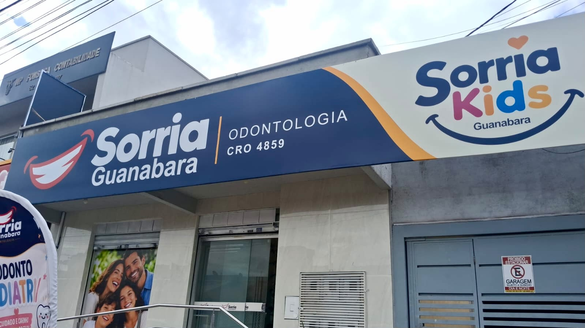